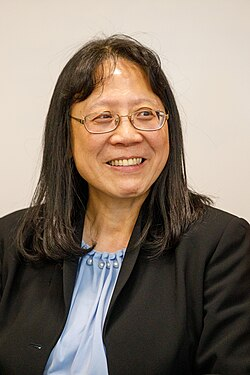

Xihong Lin (Chinese: 林希虹) is a Chinese–American statistician known for her contributions to mixed models, nonparametric and semiparametric regression, and statistical genetics and genomics. As of 2015, she is the Henry Pickering Walcott Professor and Chair of the Department of Biostatistics at Harvard T.H. Chan School of Public Health and Coordinating Director of the Program in Quantitative Genomics.
Lin received the COPSS Presidents' Award in 2006,[1] the Spiegelman award of the outstanding health statistician from the American Public Health Association in 2002, and the MERIT Award[2] from the National Cancer Institute (2007-2016).
Lin was elected a fellow of the American Statistical Association in 2000[3] and of the Institute of Mathematical Statistics in 2007, and an elected member of the International Statistical Institute in 2006.[4][5] She won the Florence Nightingale David Award of the Committee of Presidents of Statistical Societies in 2017 "for leadership and collaborative research in statistical genetics and bioinformatics; and for passion and dedication in mentoring students and young statisticians".[6] Lin was elected to the National Academy of Medicine in 2018[7] and National Academy of Sciences in 2023.[8]
Lin received her BSc from Tsinghua University in 1989 and her PhD in biostatistics from the University of Washington in 1994, where her supervisor was Norman Breslow. Her dissertation was Bias Correction in Generalized Linear Mixed Models.[9]
{kind=link}